What is PPC?
PPC stands for pay-per-click. In this model of digital marketing, advertisers place ads on certain platforms, including search engines like Google and social media sites like Facebook. In exchange for the platform showing the ad, advertisers pay a fee each time it’s clicked.
This fee varies by industry, platform, and other factors, but you’re able to set a budget in order to control how much money you spend each month.
PPC used to refer primarily to paid search ads which are, for example, the ads that show up at the top of the page when you do a Google search. However, as online advertising formats have expanded, PPC now encompasses paid search, display, and video ads. As a result, the terms paid advertising or paid media are often used interchangeably with PPC.
Strategies such as keyword research, bid adjustments, and targeting methods help get PPC ads in front of your target audience. When clicked, the ads take users to a designated landing page. This could be your website’s home page, or a landing page specifically designed to get users to convert.
Effective PPC campaigns drive website traffic, elevate brand awareness, and generate conversions– which, based on your goals, can be anything from users joining your email list or calling your business to purchasing a product online.
PPC platforms include:
Google Ads (formerly AdWords)
YouTube
Microsoft Advertising (formerly Bing Ads)
Snapchat
Each platform has different capabilities, features and costs. The two most popular platforms are Google Ads and Facebook, but the right platform for your business depends on your audience, your objectives, and other variables.
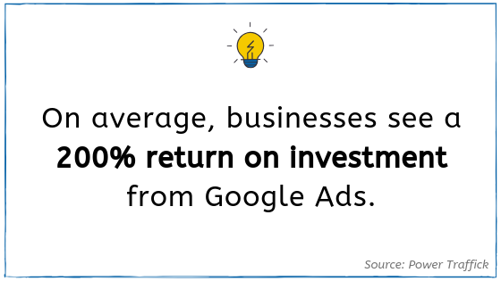
Why use PPC marketing?
Wondering why your business should use PPC ads? The following statistics that demonstrate the value of paid advertising.
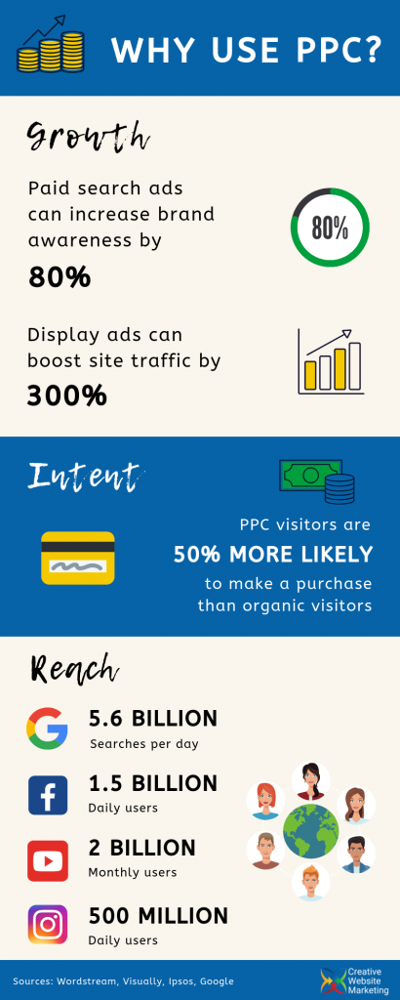
PPC drives business growth.
- Paid search ads can increase brand awareness by 80%.
- Display ads can boost website traffic by up to 300%.
- Bonus stat: On average, businesses see a 200% return on investment from Google Ads.
PPC capitalizes on user intent.
- PPC visitors are 50% more likely to make a purchase than organic visitors.
- Bonus stat: 65% of all clicks made by users who intend to make a purchase go to paid ads.
PPC platforms reach a huge number of people.
- There are 5.6 billion searches every day on Google.
- Facebook has 1.5 billion daily users.
- YouTube has 2 billion monthly users.
- 500 million people use Instagram every day.
- Bonus stat: Google display campaigns reach 90% of global internet users.
Sources: Wordstream, Visually, Ipsos, Comscore, Power Traffick, Valve and Meter.
Cheat Sheet: Understanding all the PPC acronyms
PPC marketers regularly encounter certain acronyms like CPC, CPA, and CTR. For those unfamiliar with these terms, they represent metrics in a PPC account. Each one is unique and indicates a different aspect of overall campaign performance.
These metrics help you analyze how your campaigns are performing. When you understand the data they convey, you can better determine what adjustments to make in order to improve your account. However, the data means nothing if you don’t know what each metric really means.
Therefore, we break down what the acronyms stand for, what the metrics mean, and why they’re important.
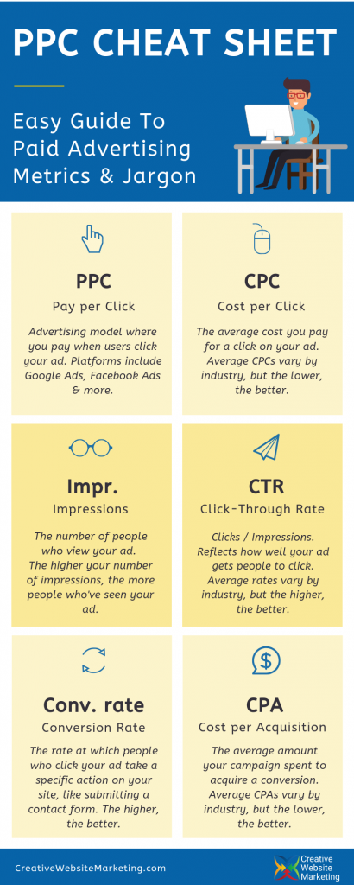
PPC
Pay per click. Advertising model where you pay when users click your ad. Platforms include Google Ads, Facebook Ads & more.
As mentioned above, this term has evolved to encompass not only search ads but also formats like display ads and video ads.
With the development of new bid strategies and advancement of machine learning, PPC offers more options than ever before to help advertisers achieve their campaign goals.
Also called: Paid advertising, paid media
CPC
Cost per click. The average cost you pay for a click on your ad. Average CPCs vary by industry and by platform, but as a general rule, the lower, the better.
There are exceptions to this rule, however. For example, companies may find it’s worthwhile to run their ad on a platform with higher CPCs, if they’re able to reach their target audience and drive qualified traffic to their site.
Nevertheless, especially if you have a smaller budget, lower CPCs allow you to get more clicks for your money and, as a result, drive more visitors to your website.
Formula: Cost / Clicks
Impr.
Impressions. The number of people who view your ad. The higher your number of impressions, the more people are seeing your ad.
CTR
Click-through rate. Reflects how well your ad gets people to click. Average rates vary by industry and by platform, but the higher, the better.
Formula: Clicks / Impressions
Also called: Interaction rate
Conv. rate
Conversion rate. The rate at which people who click your ad take a specific action on your site, like submitting a contact form. The higher, the better.
Formula: Conversions / Clicks
CPA
Cost per acquisition. The average amount your campaign spent to acquire a conversion. Average CPAs vary by industry and by platform, but the lower, the better.
Formula: Cost / Conversions
Also called: Cost per action, Cost per conversion
Popular PPC Platforms
The most popular PPC platforms are Google Ads and Facebook. However, many other platforms offer paid advertising options, each with unique features and appealing to a different audience.
Deciding which platforms are right for your business depends on your goals, budget, and target audience.
Google Ads
- Google gets 5.6 billion searches per day.
- 63% of people state they would click on a Google ad.
- The average CTR for Google Ads is 3.17% for search and 0.46% for display.
- CPCs for search average $2.69, and $0.63 for display.
- Conversion rates are, on average, 3.75% for search and 0.77% for display.
Data sources: SEO Tribunal, Search Engine Land, Wordstream
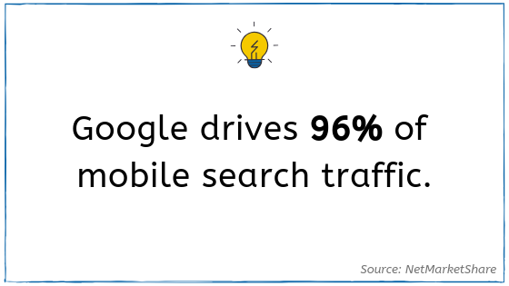
YouTube
- YouTube ads actually fall under Google Ads. Any YouTube ad must be created and managed through the Google Ads platform.
- 96% of 18- to 24-year-old American internet users use YouTube.
- Half of American internet users aged 75 and over use YouTube.
- YouTube is the 2nd most-visited website in existence, second only to Google.
- Since 2016, twice as many small and medium-sized businesses are advertising on YouTube.
- YouTube mobile ads receive viewer attention 83% of the time. Compare this to TV ads, which average around 45%.
Data sources: Hootsuite
Microsoft Advertising
- Bing Ads recently rebranded into Microsoft Advertising. Read more about that change and what it means for the platform here.
- Running PPC campaigns with Microsoft Advertising means your ads will show up across Bing, Yahoo, and AOL, plus Bing partner sites.
- There are 6 billion searches on Bing per month.
- The average CPC is $1.54.
- CTR is around 50% higher than Google Ads.
- CPA is an estimated 30% lower than in Google Ads, meaning on average, advertisers spend less for a conversion.
- Bing allows you to reach 66 million users across all industries and verticals that aren’t reached on Google.
Data sources: Wordstream, AdEspresso
- 2.38 billion monthly active users.
- 1.56 billion active users log onto Facebook every day.
- The average CTR for Facebook ads across all industries is 0.90%.
- The average CPC for Facebook is $1.72.
- Financial & insurance advertisers have the highest CPCs on Facebook at $3.77.
- The lowest CPCs on are for the apparel industry at $0.45 per click.
- Facebook users access the platform an average of 8 times per day.
Data sources: Facebook, Zephoria, Wordstream, Smart Insights
- 71% of Instagram users are under the age of 35.
- More than 500 million people use Instagram every day.
- Instagram has over 1 billion active monthly users.
- The average Instagram user spends 53 minutes on the app per day.
- 7 out of 10 hashtags on Instagram are branded.
- Average CPC is around $0.70.
Data sources: Statitsa, Oberlo, Sprout Social, AdEspresso
- There are 250 million active users on Pinterest.
- Pinterest reaches 83% of U.S. women aged 25-54.
- High-income and educated U.S. households are twice as likely to use Pinterest.
- 80% of Pinterest users are on mobile.
- 78% of users say content from brands on Pinterest is useful.
- 59% of millennials have discovered products on Pinterest.
- 90% of weekly users use Pinterest to make purchase decisions.
Data sources: Hootsuite, Pew Research
- LinkedIn has over 500 million users.
- This platform caters to a professional audience.
- Around 45% of LinkedIn article readers are in upper-level positions in their companies.
- 61 million LinkedIn users are senior-level influencers.
- 40% of users visit LinkedIn every day.
- Advertising on LinkedIn tends to be more expensive than other platforms like Facebook, with a median CPC of $5.61 compared to Facebook’s $0.51.
Data Sources: LinkedIn, Falcon.io
- In the US, there are 68 million monthly active Twitter users.
- Tweets with videos get over six times as many retweets as tweets with photos.
- 46% of U.S. Twitter users visit the site at least once a day.
- 24% of American adults use Twitter. Of those adults, Twitter users tend to skew urban, educated, and higher-income.
- 75% of B2B businesses & 65% of B2C businesses market on Twitter.
- Twitter ads are 11% more effective than TV ads during live events.
Data sources: Zephoria, Wochit, Pew Research, Hootsuite
Snapchat
- Snapchat has 190 million daily active users.
- 77% of college students use Snapchat every day.
- Roughly 70% of Snapchat users are female.
- The average user opens the app 19 times per day.
- Over 50% of Snapchat users will open a brand’s story and, of those, 86% will watch the entire duration.
Data sources: Zephoria, Adweek, Mashable, Omnicore, Campaignlive
Types of PPC Ads
When it comes to PPC, advertisers can choose from many different ad formats. The available formats vary by platform, so we’ll focus on the two major players in PPC: Google Ads and Facebook.
Ad Formats in Google Ads
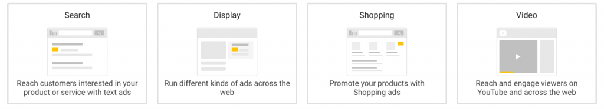
Search ads
Differentiated from organic results by a small “ad” label, search ads appear at the top of the search engine results page (SERP) when you do a Google search.
Because search ads serve up in direct response to a search query, this type of PPC ad capitalizes on intent. The user is actively searching for answers, products, or information.
Thus, search ads are a “pull” form of marketing, serving to provide relevant information to the consumer who is actively seeking it. Ideally, your ad will be relevant and engaging enough to win the click and drive the user to your website.
There are several types of search ads, the most basic of which is the text ad. Text ads consist of up to three headlines, with a limit of 30 characters each, plus up to two descriptions of 90 characters or less. The goal is to provide informative, compelling information that’s relevant to the user’s search, and entices them to click through to your site.
These are also called expanded text ads, as Google added options for a third headline and second description starting back in 2016. The expanded offerings not only allow advertisers to convey more information through their paid search ads and incorporate more keywords into the ad copy, but the ad itself also takes up more space on the SERP. This makes it more dominant and attention-grabbing on the page.
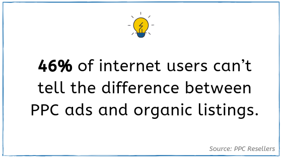
With search ads, it can be difficult to craft a message that includes the right keywords, communicates information effectively, and intrigues users to want to visit your site– all while fitting into strict character limits.
However, with the help of artificial intelligence (AI), new ad formats are making it possible to configure effective ads while minimizing manual work.
With responsive search ads, marketers provide Google with up to 15 headlines and 4 descriptions. Google will then take these assets and serve up different combinations of the headlines and descriptions on the SERP.
These ads appear the same way as regular text ads on the SERP. The difference is that machine learning will mix and match headlines and descriptions, determining over time which version performs best.
Another type of format in Google Ads, dynamic search ads, are ideal for large retailers. These only require advertisers to provide a description for an ad. Then, when a user makes a relevant search, Google automatically generates headlines based on information from your website. Coupled with the description you provided, the ad appears in response to the user’s search.
Thus, with this ad format, advertisers relinquish some control over ad messaging. But for large businesses with an extensive inventory of products, it can help create tailored ads without the manual work.
A big advantage for all of these search ads are the ad extensions available to supplement them. There are numerous options, but we recommend these 5 essential ad extensions.
Display ads
As opposed to search ads, display ads do not serve up as a response to a search query. The user is not actively searching for answers or information; instead, users see the ad while on the internet for other reasons such as reading an article, shopping around, or playing a game.
Therefore, display ads act more as a “push” form of marketing, serving to expose consumers to your brand, influence consideration, and remarket to past website visitors or customers.
In Google Ads, display refers to visual advertisements that appear throughout the Google Display Network (GDN), the vast collection of sites, apps, and YouTube channels across the internet that incorporate Google display ads into their content.
The GDN includes apps like Solitaire and websites like the New York Times– plus many, many more. In fact, the GDN includes over 2 million websites and apps.
There are several types of display ads, including image ads and responsive display ads. Image ads consist of a single photo, gif, or graphic that showcases your brand. You can use these ads to highlight a specific product or service, promote a special offer, or grow awareness of your brand.
Google Ads has specific guidelines regarding image size, quality, content, and relevance, as well as the amount of text that the image can include. Like a text ad, display ads take users to a designated landing page once they’ve clicked on it.
Responsive display ads work in the same way as responsive search ads, but advertisers provide image and logo assets in addition to headlines and descriptions. Using machine learning, Google determines the best combinations of images, logos, and ad copy, then serves up that version to maximize ad performance throughout the GDN.
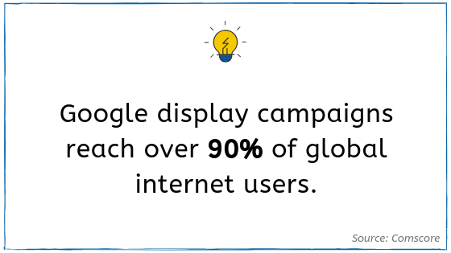
Shopping ads
Designed specifically for retailers and e-commerce businesses, shopping ads appear at the top of the SERP with a photo of your product plus a title, price, brand name, and more.
Because they provide so much information at a glance, shopping ads help weed out uninterested and unqualified users before they ever click the ad.
For example, a user who sees your ad can immediately tell how much your product costs. If it’s too expensive, they can make that determination without ever clicking on your ad. This means you don’t have to pay for a click that would have ultimately led to no engagement.
As a result, the users that do click through to your website are more qualified and more likely to actually purchase your product. This helps maximize your Google Ads budget, and can lead to an increase in your conversion rate.
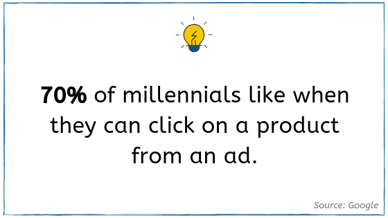
Video ads
Video content created in Google Ads can appear not only on YouTube but also on partner sites across the internet. Ad formats include skippable in-stream ads, non-skippable in-stream ads, video discovery ads, outstream ads, and bumper ads.
Skippable in-stream ads play before, during, or after YouTube videos. The viewer has the option to skip the ad after 5 seconds.
Non-skippable in-stream ads, on the other hand, do not give viewers the option to skip the ad. These ads are 15 seconds or shorter and play before, during or after the main video.
Video discovery ads do not direct users to an external website, but are actually advertisements for a YouTube video. Consisting of a thumbnail image from your video with some text, video discovery ads serve to intrigue users in moments of curiosity. These ads appear next to similar YouTube videos, in YouTube search results, or on the YouTube mobile homepage. Once clicked, they take users to the entire video.
Outstream ads play on partner websites and apps– on mobile devices only. These video ads begin playing automatically, with the sound off. Interested users can tap to unmute. Because outstream ads appear in locations other than YouTube, they can help expand the reach of your ad, introducing your brand and offering to new consumers.
Bumper ads are short, non-skippable ads lasting 6 seconds or less. These ads appear before, during, or after other videos on YouTube as well as on websites and apps throughout the GDN.
Video ads are part of PPC marketing, but they often use different cost models than “paying per click.” Instead, depending on the ad format, advertisers can utilize CPV (cost-per-view), CPM (cost-per-thousand impressions), or vCPM (viewable cost-per-thousand impressions) bid strategies.
That’s right, more acronyms! Here’s a quick breakdown of what these bid strategies mean:
- CPV: Cost-per-view. You pay when a viewer watches 30 seconds of your video or clicks on it. If an ad is shorter than 30 seconds, you will be charged when someone watches the entire duration.
- CPM: Cost-per-thousand impressions. You pay each time your ad is shown 1,000 times.
- vCPM: Viewable cost-per-thousand impressions. You pay for every 1,000 viewable impressions, which is when at least half of the ad screen space is visible to viewers for two seconds or more.
New ad formats in Google Ads
At the 2019 Google Marketing Live event, Google revealed new ad formats that will soon become available.
Gallery ads, for example, will appear at the top of the SERP like text ads. However, these ads will feature both text and images. When users tap the ad, an interactive image gallery will pop up, showcasing photos that users can swipe through.
Gallery ads will be available exclusively on mobile devices, reinforcing Google’s mobile-first mindset.
This innovate ad format combines the engaging visuals of display ads with the higher intent of search, redefining what the SERP can look like and the information it conveys to consumers.
Facebook Ad Formats
Photo ads
The most basic Facebook ad format, photo ads consist of an image, description, and call to action button. These ads can show up natively throughout Facebook, including on timelines and as part of stories.
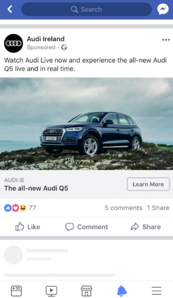
Video ads
Facebook offers several different types of video ad formats, including short gifs that look similar to a photo ad, longer in-stream ads, and fullscreen video ads.
Considering Facebook has over 8 billion video views per day, Facebook video ads can be an effective PPC option.
Playables
Arguably the most interactive ad format Facebook offers, playables offer allow users to preview the experience of an app before they download it.
Perfect for mobile games, this ad format intrigues and pre-qualifies users by letting them try out the app while still on Facebook. The preview ends with a call to action that, when clicked, takes users directly to the app store.
Messenger ads
This format puts your ad in the Facebook Messenger inbox of potential customers. The ads appear in the Chats tab, distinguished from other conversations only by a small “ad” label. Once opened, the message mirrors a photo or video ad that would appear on a timeline. This means you can repurpose existing creative to use in Messenger.
According to Facebook, 1.3 billion people use Messenger every month, so this can be a great way to reach your target audience.
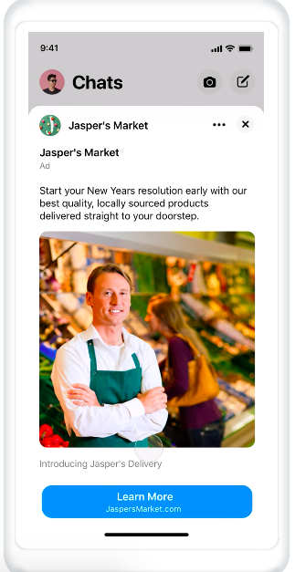
Carousel ads
With carousel ads, you can include up to 10 images or videos in a single ad, each with its own link. You can use this ad format to promote different products, tell a sequential story, highlight different benefits of your services, and more. Carousel ads prompt the user to swipe through the various images or videos, encouraging engagement with your brand.
Slideshow ads
Like carousel ads, slideshow ads display multiple images, but the user does not have to swipe to see them. These ads automatically rotate through the images, just like a slideshow going through its different slides.
These ads are more dynamic than basic photo ads, but less complicated to create than videos. Plus, slideshow ads use 5 times less data than videos, allowing them to load quickly regardless of connection speed.
Collection ads
Collection ads, ideal for showcasing products, allow you to display multiple images at once– no swiping or scrolling required. These ads look like a grid, with a main photo or video supplemented by smaller photos below it.
Why is PPC effective? 3 key reasons
What is it about this method of advertising that makes it so successful? The following features of paid advertising contribute to its strong results.
1. Higher position on the SERP
On search engines like Google and Bing, PPC ads appear at the top of the search engine results pages (SERP). This puts them above organic listings, as the first results users see in response to their search query.
This immediately exposes users to your brand, and puts your ad in front of customers’ eyes in their moment of intent.
At this point, you might think, Our site ranks high in organically, so I don’t need to pay for ads. While this is a valid thought, there have been major changes recently to Google’s ranking criteria, including the mobile-first index and several algorithm updates.
This has resulted in ranking fluctuations for many sites, making it difficult to rely on your organic listing appearing consistently in a high position.
Plus, SERPs are changing, especially on Google. In an effort to give users immediate answers and information, Google often displays featured snippets, local packs, related questions, videos, and other features that push organic search results further down the page.
Meanwhile, paid search ads are taking up more space at the top of the SERP. With expanded text ads and extensions such as sitelinks, callouts, and more, PPC ads dominate more space than ever before. This forces users to scroll further down to reach organic listings, especially on mobile.
As a result, for your business to appear high on the SERP, relying on organic rankings isn’t enough anymore.
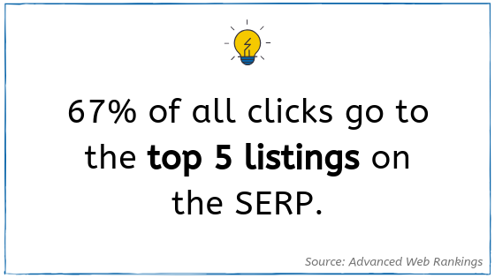
According to Joel House Search Media and Hubspot, businesses that show up on the first page of the SERP get 92% of consumer traffic, and 3 out of 4 people will never go past the first page of search results.
Furthermore, according to Advanced Web Rankings, 67% of all clicks go to the top five listings on the SERP. Therefore, if you want to win the click and drive traffic to your site, the higher you appear on the page, the better.
With organic ranking fluctuations, changing SERPs, and more dominant ads, PPC is often the best way for businesses to consistently appear at the top of the search results page.
To those wondering if visibility on search engines is really that important, Search Engine Journal reports that 93% of online experiences begin with a search engine. In other words, being visible and competitive on search engines is critical.
It’s important to note that up to four paid search ads are eligible to show above the organic search results on Google. Low quality search ads may end up at the bottom of the SERP– or not show up at all. Therefore, marketers must create strong search ads by including relevant keywords, utilizing ad extensions, and being aware of other ranking factors like landing page experience.
2. Targeting
Targeting is a way of controlling who sees your ad and who doesn’t, to ensure impressions and clicks come from your intended audience.
Without targeting, you can end up paying for clicks that don’t generate engagement with your website or benefit your business. This eats up your budget and reduces the effectiveness of your campaigns.
Targeting methods narrow down who can see your ad, so you only pay for clicks with the potential to generate engagement and conversions.
Different platforms and ad formats come with different targeting capabilities. However, one of the basic tools available on virtually all PPC platforms is location targeting.
Also called geo-targeting, location targeting lets you determine the specific geographic areas in which your ad will show. This can be as broad as a certain country or state, or as granular as a specific county or zip code.
Demographic targeting is also ubiquitous to PPC platforms and lets you narrow your audience by age, gender, household income, and other factors.
There are also more advanced methods, like audience targeting. For example, Facebook lets you target audiences based on interests and behaviors. Facebook determines which users fit these interests and behaviors not only by pages they’ve “liked” on Facebook, but also by activities they do on or off of Facebook, prior purchase behaviors, information they’ve added to their timelines, ads they’ve clicked on in the past, and more.
Audience targeting in Google Ads focuses on the intent of users. For example, custom intent audiences allow you to target users based on certain keywords they’ve searched for, websites they’ve visited, and apps they’ve used.
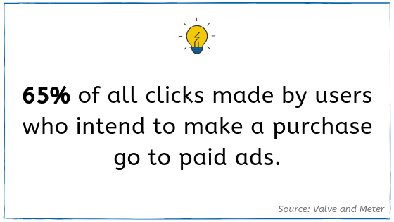
Also in Google Ads, placements and topics help control the websites and apps on which your display ads appear throughout the Google Display Network (GDN). The GDN is a huge group of sites, apps, and YouTube channels across the internet that show the display ads you create in Google Ads.
From a list provided by Google, advertisers can choose topics their target audience may be interested in. Then, various websites and apps on the GDN with content relating to those topics will display their ads. Placements let marketers choose specific websites, apps or YouTube channels on the GDN where they want their ads to show.
Other platforms have targeting methods specific to their websites. On Twitter, for example, follower targeting lets advertisers target the followers of relevant Twitter accounts. On Reddit, advertisers can place on ads on certain subreddits that their audience is interested in.
With Pinterest’s engagement targeting, advertisers can target people who have previously engaged with their Pinterest content or their website. This is similar to remarketing, a tactic in which advertisers target users who have, for example, visited their website without converting, left an item in their shopping cart, or previously purchased something from their business.
Exclusions work in the same way as targeting, but instead of selecting attributes you want to target, you choose locations, demographics, audiences, topics, and other factors that you don’t want to target. Your ads will not appear to users or show up on websites that fit excluded criteria.
The targeting methods on PPC platforms allow your ads to reach the right people at the right time. This helps make paid advertising a tremendously effective digital marketing tool.
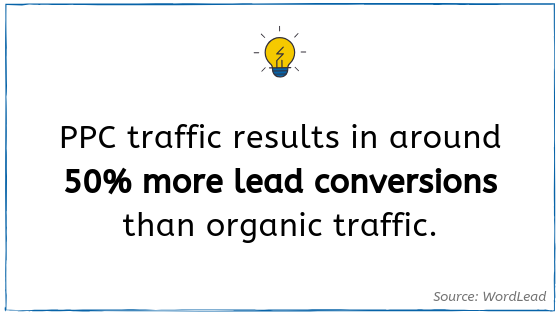
3. Artificial Intelligence (AI)
Over the past several years, PPC platforms have adopted artificial intelligence (AI) technology to automate certain processes and expand their capabilities.
Google has led the way on using AI in PPC. Applying machine learning to paid advertising has made Google Ads more advanced than ever before.
For example, responsive search ads use AI to experiment with different combinations of headlines and descriptions, determining over time what the most effective version is. Because this happens automatically, advertisers can focus on other optimization tactics in the account while maximizing the value of ad copy and creative assets.
Additionally, Google’s smart bidding strategies completely automate the bidding process. This eliminates the need for manual bid adjustments and helps to make the most of any budget, big or small.
Finally, semantic search capabilities have increased the scope of how Google understands user intent from searches based on context, search history, and other factors. This allows advertisers to reach more potential customers with the same keywords.
While Google has forged the way on using AI to improve PPC, other platforms such as Facebook and Microsoft Advertising have also taken advantage of this technology. As a result, PPC has become one of the most advanced and successful tools in digital marketing.
What makes a strong PPC account?

Account Structure
Strong PPC accounts are organized and structured strategically. First off, the account should consist of different campaigns, each themed around similar products, services, goals, or audiences.
Within these campaigns, different ad groups or ad sets allow you to separate out topics, products, or brands that fall under the campaign umbrella. For each ad group or set, you can:
- Create custom ads
- Target relevant keywords
- Narrow audiences based on demographics, household income, interests and more
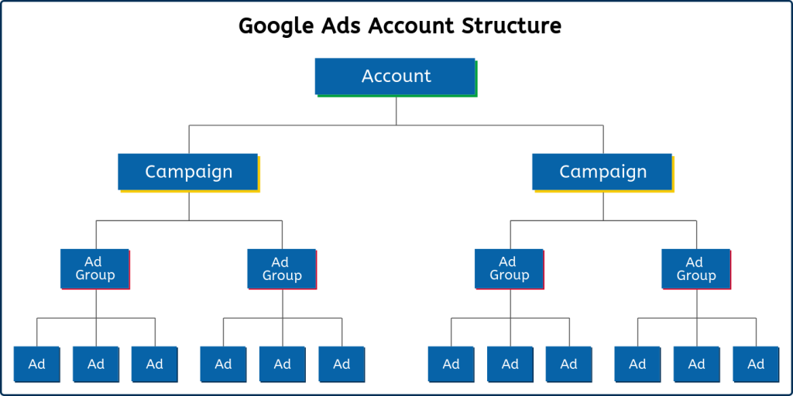
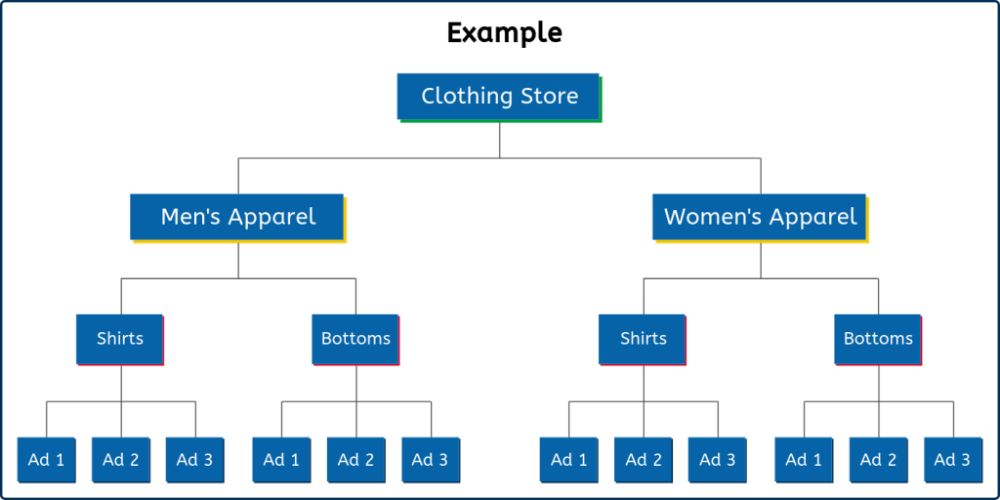
Engaging ads
If your ads don’t resonate with consumers, you’ll never get the results you want out of a PPC campaign. Thus, engaging ads are a crucial component of strong paid advertising accounts.
How do you create engaging ads?
Showcase what makes your brand unique. When writing ad copy, don’t simply regurgitate keywords or use generic statements. Incorporate keywords, but don’t overdo it – ensure the messaging is natural, informative, and authentic.
Address the specific needs of your audience, and communicate how your business offers solutions. Include a call to action, directing users to take the next step, whether it’s to shop now, join an email list, or simply learn more.
For display and video ads, create high-quality visual content that demonstrates your value. Grab users’ attention with a display ad offering a special discount, or tell a powerful story through a video ad.
To summarize, strong ads:
- Are relevant to the audience
- Showcase a brand’s value
- Encourage users to take an action
New Ad Formats & Tools
Using new ad formats and tools can make your paid ads much more competitive. For example, in Google Ads, a responsive display ad has a broader reach than a typical image ad. This means it’s able to appear on more sites and apps throughout the internet.
Thus, using this ad format gets your ad in front of more people, expanding brand awareness and potentially driving more traffic to your website. Plus, responsive ads use machine learning to optimize automatically, reducing manual work and further boosting ad performance.
Furthermore, as AI and machine learning develop, PPC platforms are creating smarter bid strategies, targeting methods, and more. Along with new ad formats, incorporating these up-to-date tools into your PPC strategy will keep your campaigns as efficient and effective as possible.
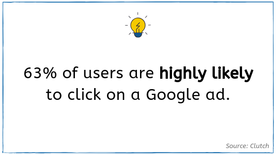
Conversion & Event Tracking
By implementing conversion and event tracking, marketers are able to look deeper than basic, ad-level metrics like clicks and impressions.
Tools such as Google Tag Manager allow advertisers to track meaningful engagement on their websites, such as contact form submissions or clicks on the phone number.
The events you choose to track should stem from your KPIs. That way, you can see how users are interacting with your site and if they’re taking desired actions. Based on the data, you can see if you’re meeting your goals, and analyze opportunities for improvement.
Ongoing Optimization
A set-it-and-forget-it approach to PPC will not generate strong results. Instead, paid advertising campaigns should be managed on an ongoing basis, in order to fully maximize budget and performance.
Optimization tactics include targeting enhancement, A/B testing, bid strategy adjustments, negative keyword identification, remarketing efforts, and more. Even small tweaks can sometimes result in significant improvements.
By regularly monitoring campaign metrics, search term reports, platform updates, and other key areas, marketers can make changes as needed to ensure their account will continue to perform optimally.
Bonus: Landing Pages
While not directly part of a PPC account, landing pages still play an important role in paid advertising performance. The landing page is the web page you drive users to once they click on an ad, so in a way, it’s the culmination of all your paid advertising efforts.
Effective landing pages must provide compelling information that’s relevant to the user. If a user doesn’t get the information they expect when they click on your ad, they’re unlikely to engage with your site. This will cause your bounce rate to increase and overall engagement to plummet.
Thus, in order to satisfy user intent, the content on the landing page should align with and expand on your ad messaging.
Landing pages should also be designed to facilitate conversions. Think about the action you want the user to take once they click on your ad. Do you want them to sign up for your newsletter? Download an ebook? Submit a contact form? Make a purchase?
Whatever your goal is, the landing page should guide users to take that action. Make the call to action stand out. Minimize any distracting or irrelevant information. A/B test to determine the most effective features such as copy, color, layout, and more.
Learn more about how to create landing pages that convert.
Note that page speed is critically important when it comes to landing pages– especially on mobile. In fact, according to Google, 53% of mobile users will abandon websites that take more than 3 seconds to load. Be sure to monitor page speed and make any necessary improvements. This will help ensure you don’t lose traffic due to a slow site.
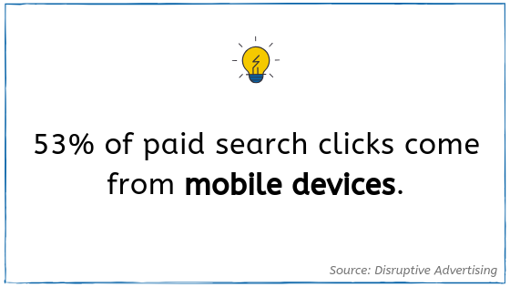
How much does PPC cost?
The internet is increasingly becoming a pay-to-play environment, meaning that to be competitive online today, companies must invest in paid advertising.
Fortunately, PPC platforms allow advertisers to set their own budgets, putting them in control of how much is spent per campaign. This allows businesses to take advantage of paid media, even if they have a small budget.
When it comes to deciding how much to allocate to paid advertising efforts, there are several variables to consider.
As discussed above, each platform has different CPCs. Companies with smaller budgets might opt for cheaper platforms like Facebook. However, if a more expensive platform caters to your target audience, it may be worth the investment.
When creating a budget, companies should also think about the value of a lead. By determining how much a lead is worth to you, you can then work backwards. How many leads do you want from a PPC campaign in a month?
For example, if your CPA is approximately $100, and you want 10 leads per month, allocate a monthly budget of $1,000. Keep in mind that as campaigns become more optimized through machine learning and manual adjustments, the CPA should improve over time. As a result, you can get more results for the same budget.
Not sure of your CPA? One way to determine this is to find the average CPA for your industry. Or, start by allocating a smaller budget, and let your campaign run for several weeks. See what the CPA is and use that as a baseline for building your bigger budget.
There are several PPC budget calculators available online as well. These tools can help you determine the right budget for your campaigns, based on your resources and goals.
If you’re using an agency for PPC Management, don’t forget to consider their management fee. Some agencies charge a percentage of your media spend, and others charge a flat monthly fee. Creative Website Marketing, for example, charges a flat rate. Find our starting-at prices here.
Unsure if you should manage your PPC accounts in-house or hire an agency? Read on.
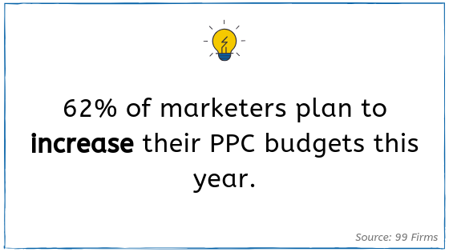
Should I manage my PPC accounts in-house or outsource?
As mentioned above, PPC accounts require strategic set-up and ongoing management.
For some companies, managing paid media campaigns in-house is possible, and Creative Website Marketing has some resources to help. For example, learn more about advertising on LinkedIn or 5 ways to maximize your Google Ads budget.
However, with technology changing rapidly and PPC strategies becoming more complex, account management can be complicated and time-intensive. Thus, many businesses find that hiring an agency is the best way to maximize PPC efforts.
For in-house marketers lacking the time or resources to give their campaigns close attention, working with a digital marketing agency can revitalize paid advertising efforts.
Agencies stay up-to-date with the latest digital marketing trends and technology. They have the expertise to closely examine PPC accounts, identifying opportunities for improvement and implementing strategic solutions.
This can make a big difference in maximizing PPC budgets and performance.
Think hiring an agency might be right for your business? Learn more about the benefits of hiring a digital marketing agency.
That’s all, folks
You made it through the guide! We hope that with a better understanding of PPC, you will be able to implement paid ads into your digital marketing strategy.
Have additional questions about PPC? Reach out to Creative Website Marketing here, or check out our PPC Management services.
Creative Website Marketing is a digital marketing agency in Nashville, TN, helping businesses throughout the country execute strategic brand awareness + lead generation efforts.